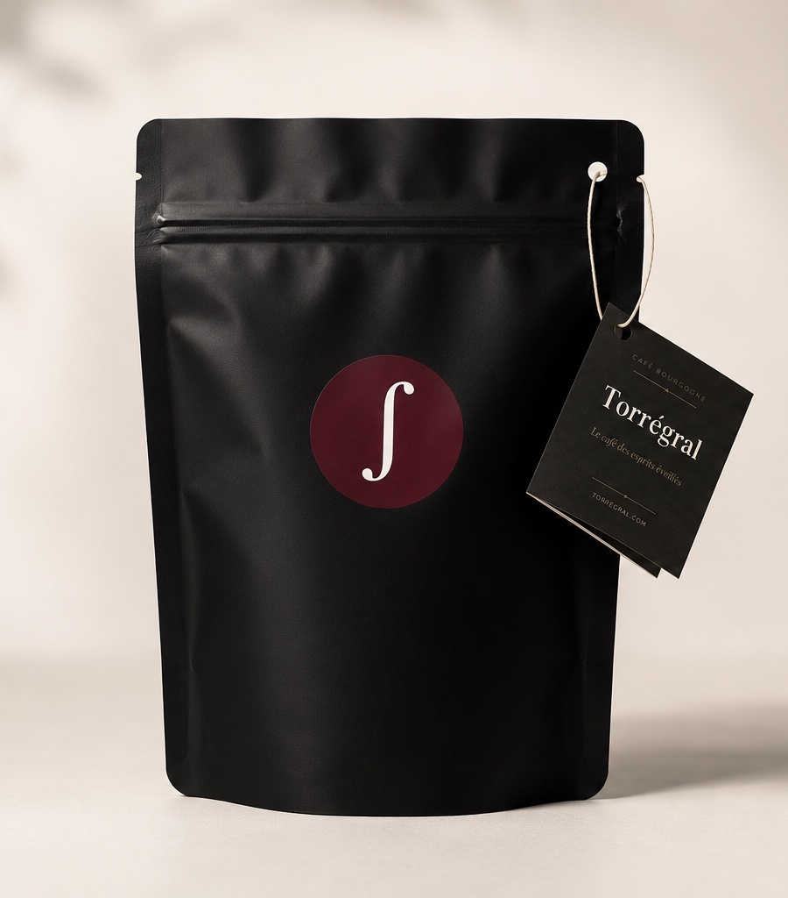
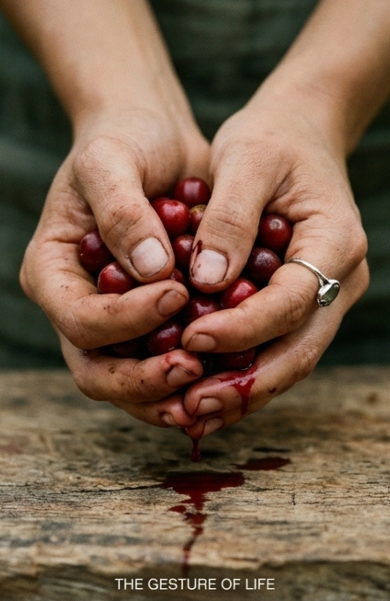

Pas un café de plus.
Un café pensé pour remplacer votre tasse automatique par un rituel plus clair, plus stable et plus conscient.
Le café des idées qui deviennent réelles
Torrégral garde le goût familier du café, mais utilise la cerise de café de façon plus complète: une énergie plus stable, une clarté mentale accrue, et un rituel qui soutient le travail profond.
Un café pensé pour remplacer votre tasse automatique par un rituel plus clair, plus stable et plus conscient.
Pas de champignons, pas d'arômes tendance, pas de liste d'ingrédients incompréhensible. Torrégral part du café lui-même.
Pour les créateurs, indépendants, dirigeants et esprits intenses qui veulent transformer leurs idées en livrables.
La différence
Depuis des siècles, nous avons réduit le café à sa graine torréfiée. Pourtant, le grain n'est qu'une partie de la cerise de café. Autour de lui, il y a une peau, une pulpe, des fibres, des polyphénols, des antioxydants et une logique végétale plus vaste.
Torrégral construit un pont: le goût connu du café torréfié, enrichi par une approche plus complète du fruit du caféier. Même geste. Même tasse. Une intention différente.

Ce que vous cherchez vraiment
Les cafés fonctionnels du marché ajoutent souvent des actifs extérieurs. Torrégral choisit une autre voie: utiliser mieux la plante que vous buvez déjà.
Une stimulation plus posée, pensée pour éviter la logique du pic suivi du crash.
Une tasse pour entrer dans le travail avec plus de lucidité et moins de dispersion.
Un rituel quotidien qui soutient la concentration, l'apprentissage et la mémoire sur le long terme.
La porte d'entrée simple pour ceux qui aiment le café et veulent une version plus complète.
Pourquoi ça a du sens
Torrégral ne promet pas un miracle. Il propose une hypothèse simple et robuste: une énergie mieux régulée aide à mieux travailler, mieux apprendre, mieux finir.
Ils participent à l'intérêt nutritionnel du fruit et différencient Torrégral d'un café réduit à son grain.
Des recherches sur le fruit de café entier ont observé un intérêt autour du BDNF. Nous restons prudents: Torrégral accompagne, il ne traite pas.
Pris chaque matin, Torrégral devient un signal clair: ouvrir la journée, poser l'attention, avancer sans se disperser.
Pour les esprits intenses
Mode d'emploi
Torrégral se prépare comme un café classique: filtre, piston, italienne ou méthode douce. Pas besoin d'apprendre une nouvelle routine. L'objectif est de créer de la constance.
Votre tasse du matin, avec la méthode que vous utilisez déjà.
Choisissez une tâche importante. Une seule. Lancez-la.
Ce n'est pas un hack. C'est un rituel de clarté qui s'installe.
Marché des cafés upgradés

Né d'une découverte
Torrégral vient de l'univers Café Intégral, né après une découverte au Costa Rica: le caféier est un fruit puissant, mais notre culture moderne en a surtout retenu le grain torréfié.
Café Intégral explore la version originelle du fruit. Torrégral en est le pont quotidien: une tasse au goût de café, pensée pour les personnes qui veulent avancer avec plus de clarté.
Lire l'histoire complèteLancement
Choisissez une tasse qui respecte votre goût du café, mais qui élève votre niveau d'exigence: plus de clarté, plus de constance, plus d'action livrée.
Paiement sécurisé via Stripe.
FAQ
Oui. Torrégral garde le goût et l'usage du café, mais il s'appuie sur une vision plus complète de la cerise de café.
Oui, Torrégral contient naturellement de la caféine. L'intérêt est de rechercher une expérience plus stable et plus complète qu'un café classique.
Non. Torrégral est un café naturel. Son positionnement s'inspire de la nutrition fonctionnelle, mais il ne remplace pas un avis médical.
Pour les personnes qui aiment le café, mais veulent plus de clarté, plus de constance et un rituel aligné avec leur niveau d'exigence.